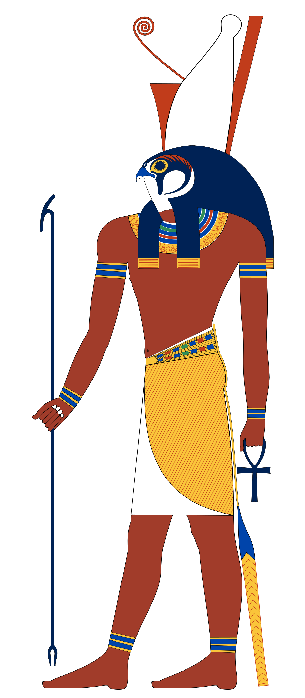

Horus, nazývaný také Hor, byl významným bohem starověkého Egypta. Byl bohem nebes, slunce a světla a Egypťané věřili, že jeho oči představují slunce a měsíc. Horus je často zobrazován jako muž se sokolí hlavou nebo jako sokol. Jeho otcem byl Usir (Osiris) a matkou Eset (Isis). Po zavraždění svého otce bohem chaosu Sutechem, Horus bojoval se Sutechem o trůn Egypta. Během této bitvy Horus ztratil jedno oko, které bylo nahrazeno bohem měsíčního svitu Chonsuem stříbrným okem. Toto oko, známé jako Horovo oko, se stalo symbolem ochrany a moci celého Egypta.
Horus se nakonec stal prvním faraonem starověkého Egypta a všichni následní faraoni byli považováni za jeho převtělení. Měl čtyři syny: Duamutefa, Hapiho, Imseta a Kebehsenufa. Horovi bylo zasvěceno mnoho chrámů, z nichž nejznámější jsou chrám v Edfu a chrám v Kom-Ombu. Jeho kult pochází z konce 4. tisíciletí př. n. l. a byl prvním bohem, který byl uctíván po celém Egyptě. Horus je jedním z nejstarších a nejvýznamnějších egyptských bohů, uctívaný po celou dobu egyptské historie.